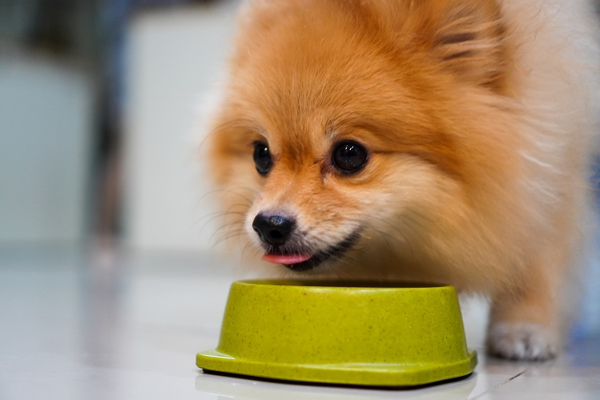

С момента, когда древний человек приручил собаку и она стала жить с ним бок о бок, появилось огромное разнообразие пород собак. Но каждая собака, даже малыш той, остается потомком древних диких псов и ближайшим родственником волка.
Независимо от породы, собакам (как и волкам) необходим животный белок. Однако рацион пекинеса будет отличаться от рациона ротвейлера.
Хозяев собак условно можно разделить на два лагеря: одни обеими руками за самостоятельно приготовленный рацион, другие — за готовые корма из магазина.
Оба вида кормления имеют право на жизнь. Но важно понимать, что сбалансировать рацион самостоятельно – сложная задача. Здесь не обойтись без ветеринарного врача и диетолога, плюс вашей собаке понадобится дополнительный витаминно-минеральный комплекс.
Профессиональные корма более популярны, так как удобны в использовании и экономичны. Выбрав профессиональный корм не ниже суперпремиум-класса, можно не переживать, что хвостатый друг недополучает нужных питательных веществ.
У владельцев маленьких собачек этот вопрос возникает особенно часто. Кормить небольшого питомца консервами высокого качества – не так затратно, как если бы у вас была крупная собака. На чем же остановиться?
Можно выбрать любой вариант: кормить или только сухим, или только влажным кормом – главное, чтобы он был полнорационным. А можно сочетать и влажные, и сухие корма, чтобы ваша собака получила преимущества обоих типов кормов.

Как было бы просто, если бы один корм для мелких пород подходил всем без исключения компактным собачкам. Но выбор рациона зависит от состояния и индивидуальных особенностей питомца: уровня активности, возраста, образа жизни, вкусовых предпочтений.
Выбрать действительно подходящий корм бывает непросто. Выручают профессиональные бренды кормов (Monge, CORE), которые специально для мелких пород предлагают несколько разнообразных рецептур. У каждого корма своя особенность. Например: